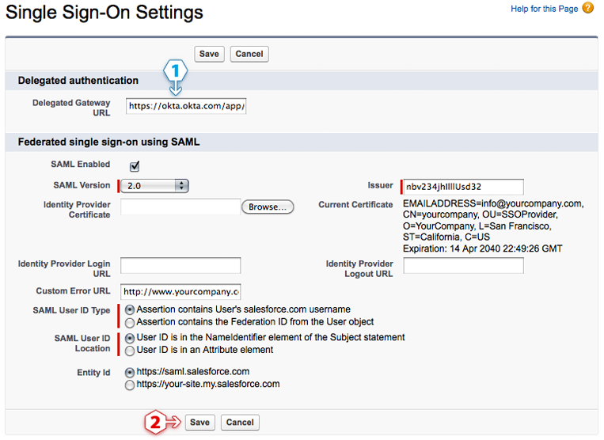

Log in to JobScience with the same administrator username and password-token used for User Management.
Click on Setup
Click Security Controls to open the sub-menu
Click Single Sign-On Settings
Click the Edit button to display a form similar to the page shown on the right →
Check SAML Enabled and a form will display
Set the SAML Version to 2.0
Download your Okta Identity Provider Certificate so you can upload it in the Identity Provider Certificate field
Please sign-in to the Okta Admin app to have your organization specific variables generated for you. You might not be able to complete the setup without these generated variables.Copy and paste the following key into Issuer:
Please sign-in to the Okta Admin app to have your organization specific variables generated for you. You might not be able to complete the setup without these generated variables.(Optional) Copy and paste the following URL into Identity Provider Login URL:
Please sign-in to the Okta Admin app to have your organization specific variables generated for you. You might not be able to complete the setup without these generated variables.This will authenticate your users when they attempt to log in directly to JobScience or click on a deep link in JobScience and are not currently authenticated.
(Optional) Copy and paste the following URL into Identity Provider Logout URL:
Please sign-in to the Okta Admin app to have your organization specific variables generated for you. You might not be able to complete the setup without these generated variables.This URL sends your users to their Okta home page when they log out of JobScience.
Set the SAML User ID Type to Assertion contains User's JobScience username
Set the SAML User ID Location to User ID is in the NameIdentifier element of the Subject statement
Click Save
Delegated authentication enables various integrations with JobScience — like the Microsoft Outlook plugin — as well as giving you the ability to lock a user out of JobScience. Unlike SAML 2.0 single sign-on, delegated authentication is turned on at the user profile level. You have the ability to enable delegated authentication for a single user or large group; it all depends on who has the user profile where the Is Single Sign-On Enabled permission is enabled.
You can't see this form until JobScience has enabled delegated authentication for your organization. Once enabled, the delegated authentication form is located on the Single Sign-On Settings page in JobScience — the same place where you configure SAML 2.0.
Contact your JobScience Systems Account representative and ask them to enable delegated authentication for your organization. You can also do this by opening a case in the JobScience systems customer service applications.
Once JobScience systems enables delegated authentication you can proceed with the steps below.
Go to the Single Sign-On Settings page located in the Setup > Security Controls section of JobScience. Click the Edit button to display a form similar to the page shown on the right →
Copy and paste the URL below into the Delegated Gateway URL field:
Please sign-in to the Okta Admin app to have your organization specific variables generated for you. You might not be able to complete the setup without these generated variables.Click Save

We recommend creating a test user profile so you can experiment with this feature on a single user. If you feel comfortable with this feature then you can skip to the next section.
Go to the Profiles page located in the Setup > Manage Users section of JobScience
Open a User Profile you would like to experiment with
Click the Clone button to make a copy of this profile. Using a cloned profile allows you to avoid impacting any other users who have the original profile.
Give the cloned profile a name
Click Save
IMPORTANT: Enabling single sign-on for a user profile will affect every user who is assigned that user profile. If you want to experiment with a single user first, we reccomend creating a cloned profile (see above) to test with.
Go to the Profiles page located in the Setup > Manage Users section of JobScience
Click Edit on the user profile and scroll down to the General User Permissions section
Check the Is Single Sign-On Enabled checkbox
Click Save
IMPORTANT: Do not enable delegated authentication for the JobScience user used by Okta to connect to the JobScience User Management APIs. The API user is specified in the User Management settings. Go to Okta User Management settings for JobScience.
Go to the Users page located in the Setup > Manage Users section of JobScience
Click Edit for a user you want to enable single sign-on for
Select a Profile that has delegated authentication single sign-on enabled (use the cloned profile if you are experimenting)
Click Save
In Okta, go to the users list and click a person's name to open their profile
Click Assign Application
Select JobScience from the list and enter a JobScience username that has delegated authentication enabled
Click Save
Login to Salesforce to go to the JobScience login page
Enter the JobScience username you used in the previous section
Enter the Okta password for the Okta user assigned the JobScience username above
Click Login
Assuming you logged in successfully, you can use these credentials for JobScience client application integrations like the Microsoft Outlook plugin and other APIs.
Your users are ready to single sign-on to JobScience!
You can assign JobScience access to users from their user profile.